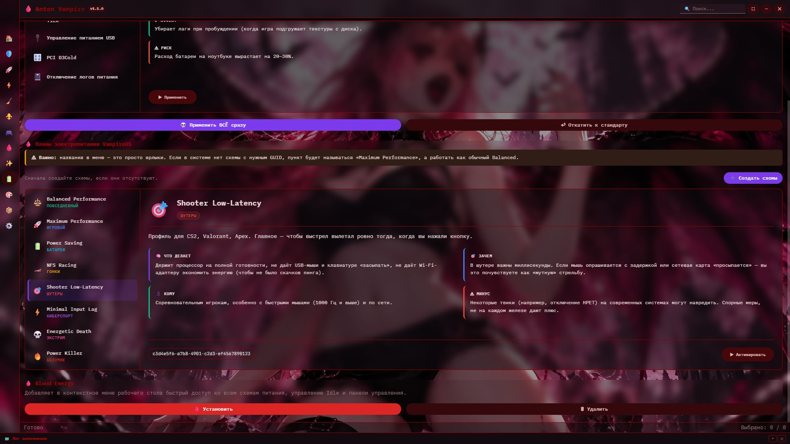

Полностью переписанный Windows оптимизатор.
1000+ твиков, 100+ тем,
8 CSS-стилей, VampireOS,
игровой режим 2.0, менеджер служб. В 1.2.0-beta — полная
техническая документация powercfg.
Реальный интерфейс в теме Vampire: The Masquerade и стиле Material Mini.

Подробная документация powercfg, кнопка «📖 Как это работает» и новые дефолты.
Каждый шаг кастомных планов VampireOS разобран: логика скрипта, GUID'ы подсистем, GUID'ы параметров, AC/DC-логика и итоговый эффект.
В master-detail планов VampireOS появилась кнопка, открывающая модальное окно с пошаговым разбором выбранной схемы.
В документации объяснено, что CommandFlags = 32 создаёт разделитель в контекстном меню рабочего стола, а не отдельный пункт.
powercpl.dll у каждого пунктаПо умолчанию теперь materialmini CSS-стиль и тема vampire_the_masquerade.
От аудита безопасности и VampireOS до курсоров и обоев.
Polling CPU/GPU/RAM/диск, быстрый переход.
3 аудита, Firewall, NetMon, HTML-отчёты.
Папки, реестр, задачи, службы.
7 источников + вендоры.
12 секций: шейдеры, логи, кэши, Temp.
DISM, SFC, CHKDSK, сеть, hero-откат.
14 планов, Power Killer (6), 200+ служб.
13 категорий, Power Max / Power Save, откат.
Power Killer + таблица + разбор powercfg.
Таблица, поиск, бэкап .reg.
Курсоры с превью + 4 источника.
Appx, Defender/Edge/OneDrive/WebView2.
6 под-вкладок.
Всё в extreme_data/.
Три независимых аудита: Защита (21), Приватность (14), Удобство (13). Score от 1 до 6.
ITEM|severity|id|name|result|expectedСкачивание с GitHub, распаковка 7-Zip, установка в C:\Windows\Cursors\.
nativeImage.createFromPathv1.2.0-beta · Windows 10/11 · Требуются права администратора